I
FINEST INGREDIENTS
가장 좋은 것만
전 세계에서 엄선한 소수의 재료. 대체재를 두지 않기에, 기준은 언제나 하나뿐입니다.
Since 1960 · New York
한 스푼에 담기 위해 선택한 몇 가지의 재료.
하겐다즈는 더하지 않는 방식으로
완벽한 풍미를 완성합니다.
01 — PHILOSOPHY
1960년, 창립자는 단 하나의 원칙을 세웠습니다. 타협하지 않은 재료만을 사용할 것. 그 약속은 60여 년이 지난 지금도 모든 파인트 안에 그대로 담겨 있습니다.
I
FINEST INGREDIENTS
전 세계에서 엄선한 소수의 재료. 대체재를 두지 않기에, 기준은 언제나 하나뿐입니다.
II
CRAFTED WITH PASSION
속도보다 밀도를 택합니다. 느린 공정이 남기는 것은 시간이 아니라 풍미입니다.
III
PURE INDULGENCE
한 스푼이 주는 짧은 사치. 그 순간만큼은 아무것도 방해하지 않도록 설계했습니다.
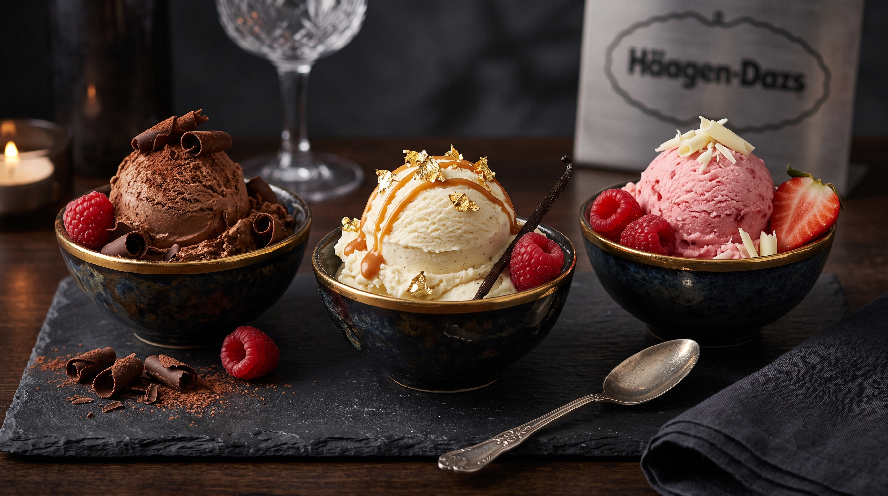
02 — FINEST INGREDIENTS
마다가스카르의 바닐라 농원, 벨기에의 오래된 초콜릿 공방, 새벽에 짜낸 생크림.
하겐다즈는 재료를 구매하지 않고, 재료가 자라는 시간을 기다립니다.
인공 향료와 색소를 배제한 자리에는, 오직 재료 본연의 향이 남습니다.
마다가스카르 바닐라
MADAGASCAR VANILLA
벨기에 초콜릿
BELGIAN CHOCOLATE
신선한 생크림
FRESH CREAM
제철 딸기
STRAWBERRY
03 — CRAFTSMANSHIP
공기를 최소한으로 머금게 하는 느린 교반. 그래서 하겐다즈의 한 스푼은 더 무겁고, 더 진합니다.
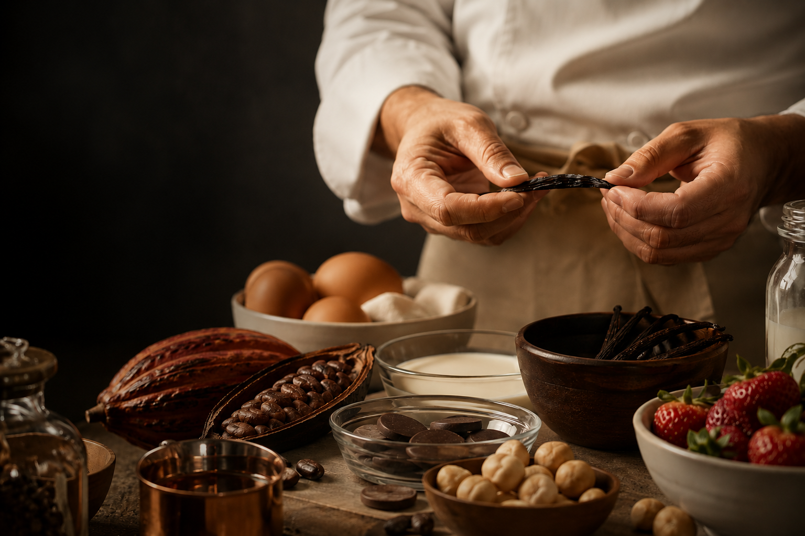
SELECTING INGREDIENTS
산지와 수확 시기를 직접 확인합니다. 기준에 미치지 않으면 그 해의 재료는 사용하지 않습니다.
CAREFUL BLENDING
크림과 우유, 달걀의 비율은 온도에 따라 매일 조정됩니다. 배합은 계산이 아니라 감각의 영역입니다.
SLOW CHURNING
공기를 최소한으로 머금게 하는 저속 교반. 시간을 들일수록 조직은 촘촘해집니다.
PERFECT TEXTURE
스푼이 들어가는 저항감까지 설계합니다. 녹는 속도와 입안의 잔향이 이 단계에서 결정됩니다.
LUXURY EXPERIENCE
뚜껑을 여는 소리부터 마지막 한 스푼까지, 모든 감각이 하나의 경험으로 이어집니다.
04 — SIGNATURE COLLECTION
담기는 그릇은 달라도, 안에 들어가는 기준은 하나입니다.
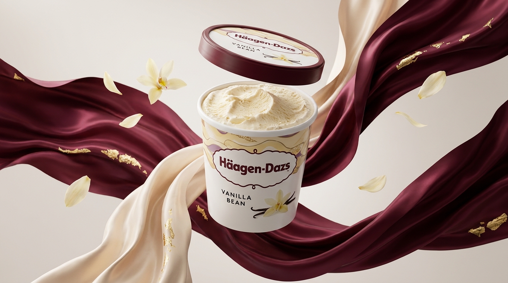
MINI CUP
가장 개인적인 크기. 하루의 끝에 어울리는 한 컵입니다.
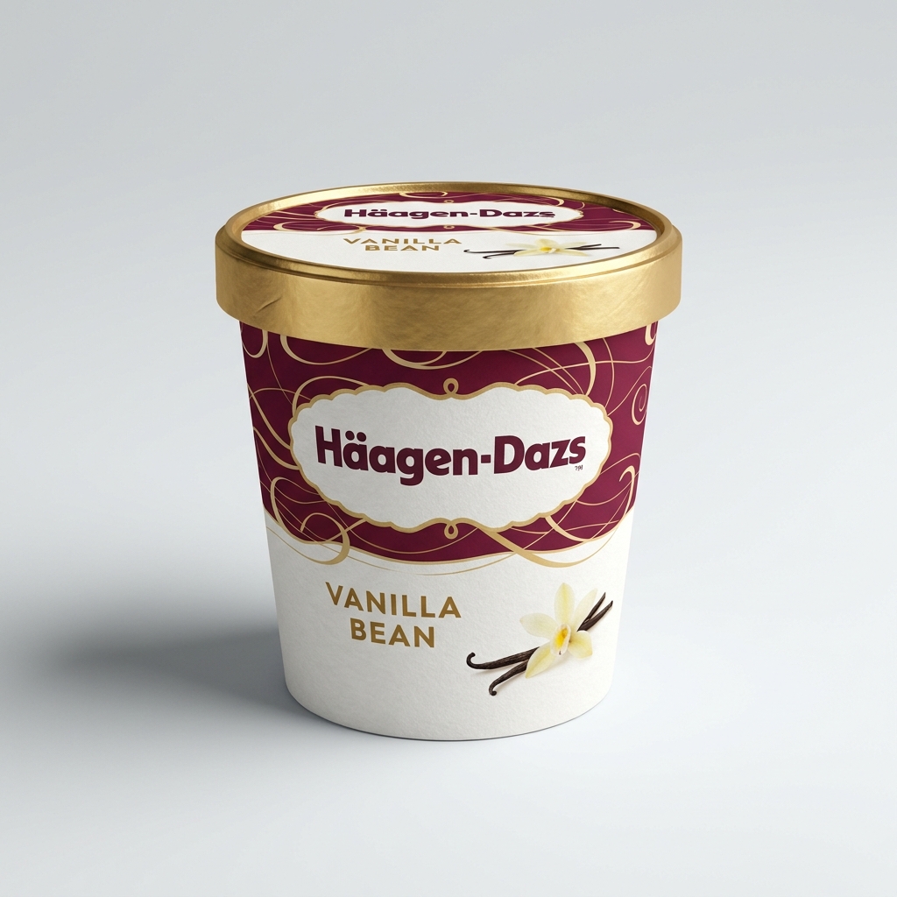
PINT
브랜드의 원형. 가장 깊은 밀도를 그대로 담았습니다.
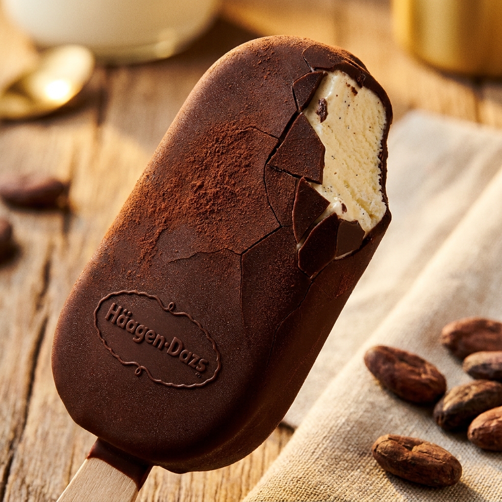
BAR
얇은 초콜릿 코팅이 만드는 첫 번째 소리.
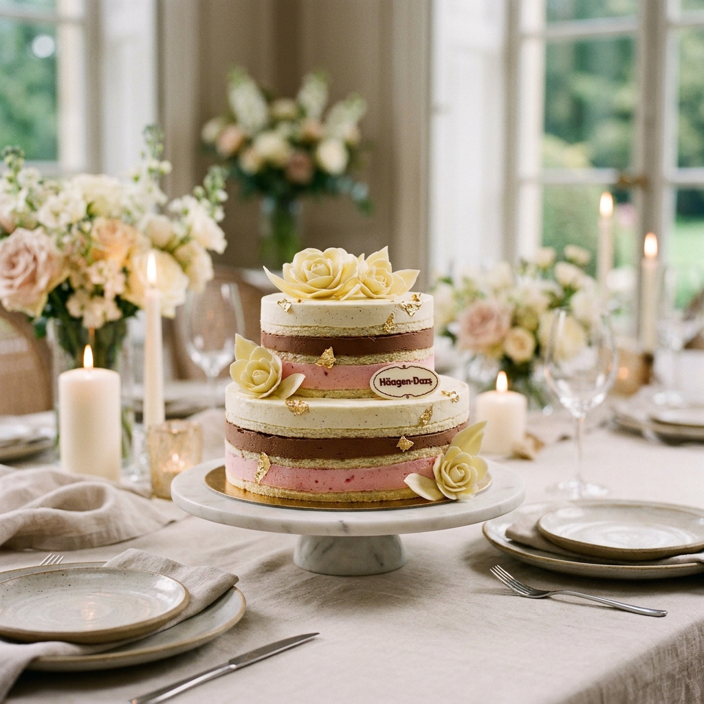
CAKE
축하의 순간을 위한 가장 조용한 화려함.
“
완벽한 맛은 더하는 데서 오지 않습니다.
남길 것을 아는 데서 옵니다.
PERFECTION DOES NOT COME FROM ADDING MORE — IT COMES FROM KNOWING WHAT TO LEAVE BEHIND. PURITY OVER EXCESS. PATIENCE OVER SPEED. THIS IS THE HÄAGEN-DAZS WAY.
05 — FLAVOR GALLERY
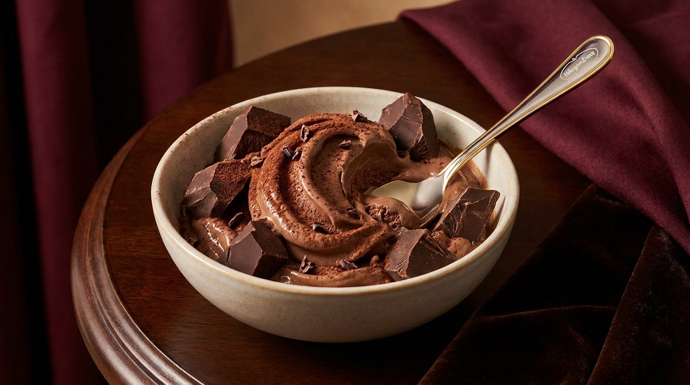
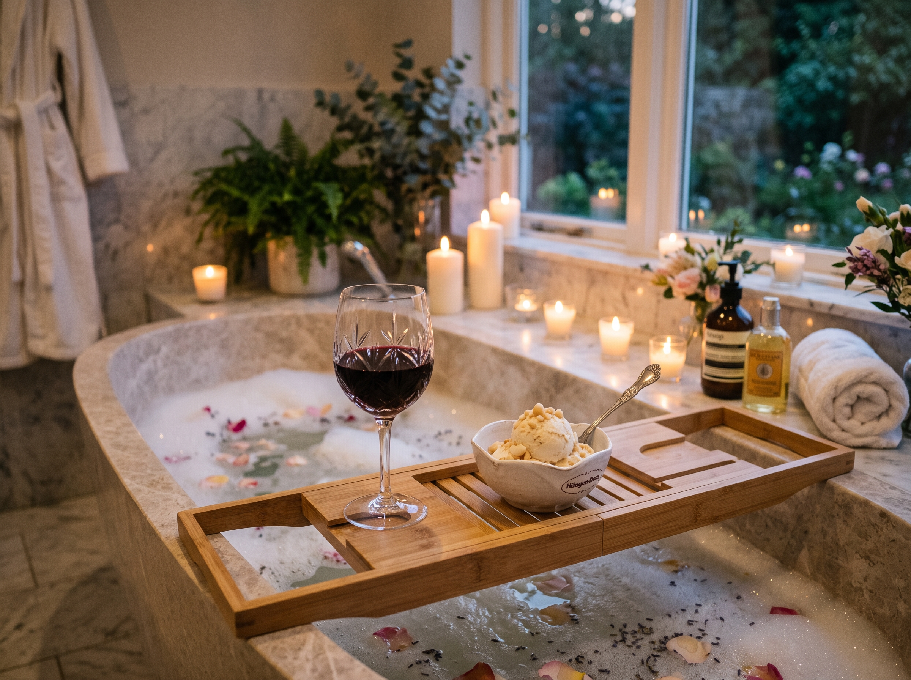
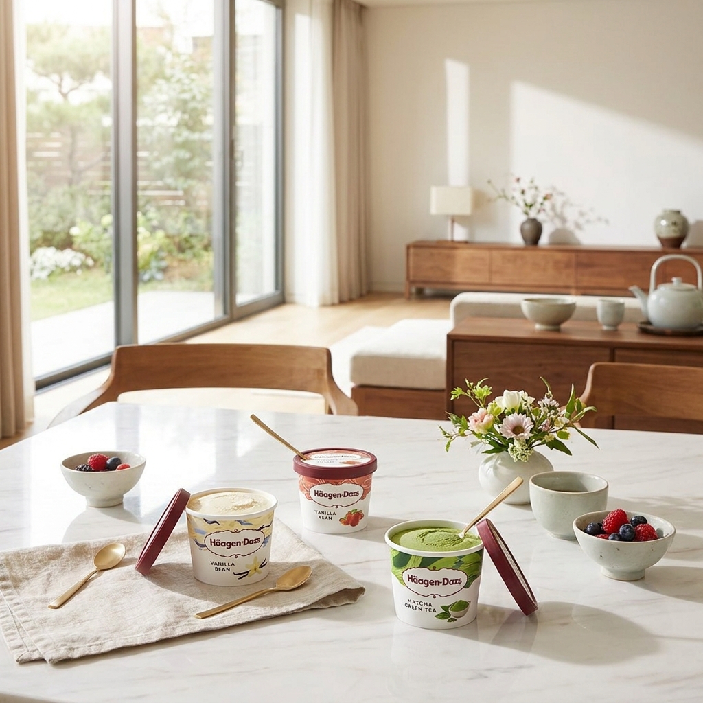
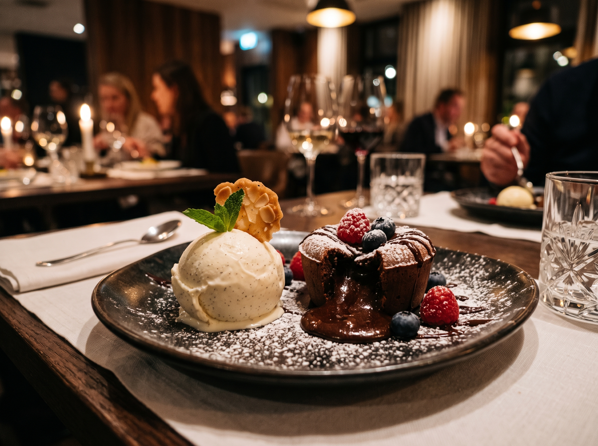
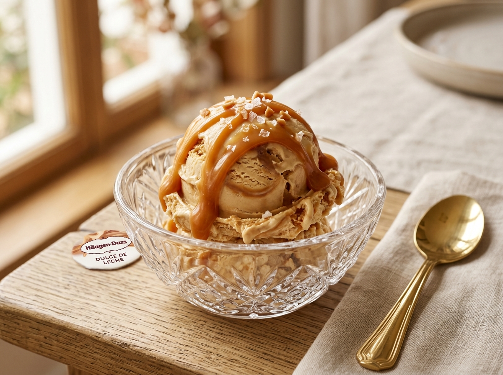
06 — MOMENTS
누군가에게는 하루의 마침표, 누군가에게는 축하의 시작. 뚜껑을 여는 짧은 순간이 하루의 온도를 바꿉니다.
07 — HERITAGE
1960
창립자는 최고의 재료만으로 아이스크림을 만들겠다는 원칙을 세웠습니다.
1976
브랜드의 경험을 온전히 전하기 위한 첫 공간이 문을 열었습니다.
1991
파리를 시작으로 프리미엄 아이스크림의 기준이 세계로 퍼졌습니다.
1998
하겐다즈 코리아가 국내 소비자에게 처음 인사를 건넸습니다.
2026
60여 년이 흐른 지금도, 첫 번째 원칙은 그대로입니다.